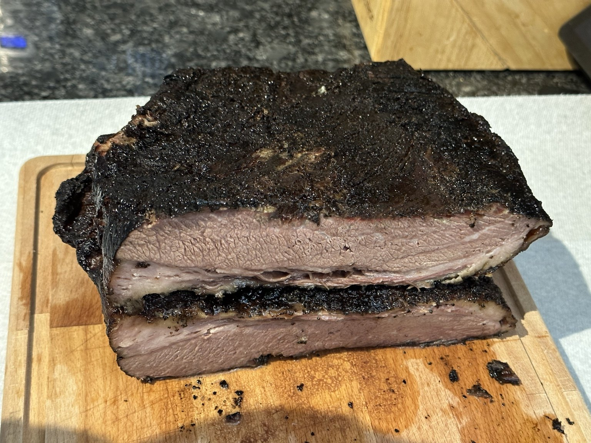
BRO-B-Q · MMXXIII
Edition II
A Summer Tradition.
We should do this again.
What Changed
Now it's tradition.
New faces joined.
The first BRO-B-Q shirts arrived.
The Story
The first gathering proved it could happen.
The second proved it wasn't a coincidence.
Friends came back. New ones pulled up a chair. Families settled in.
Somewhere between the matching shirts and another round of ball-busting, BRO-B-Q stopped feeling like an idea.
It became something everyone looked forward to.

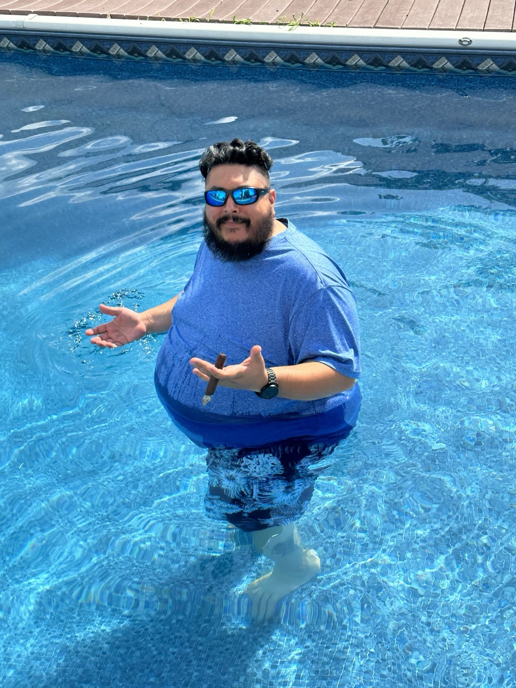
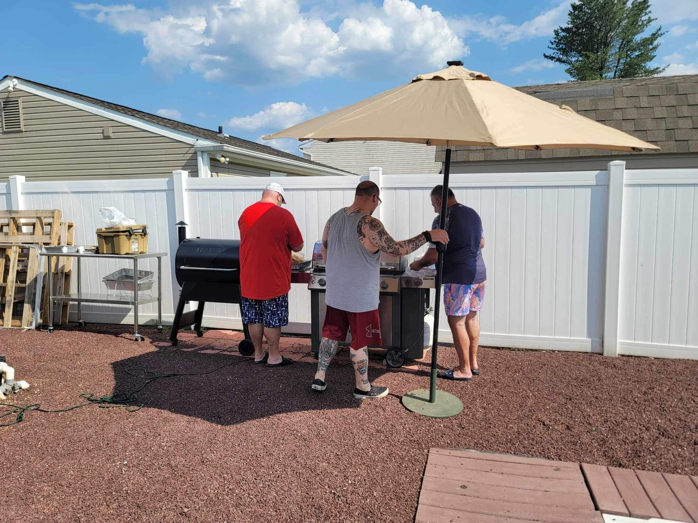
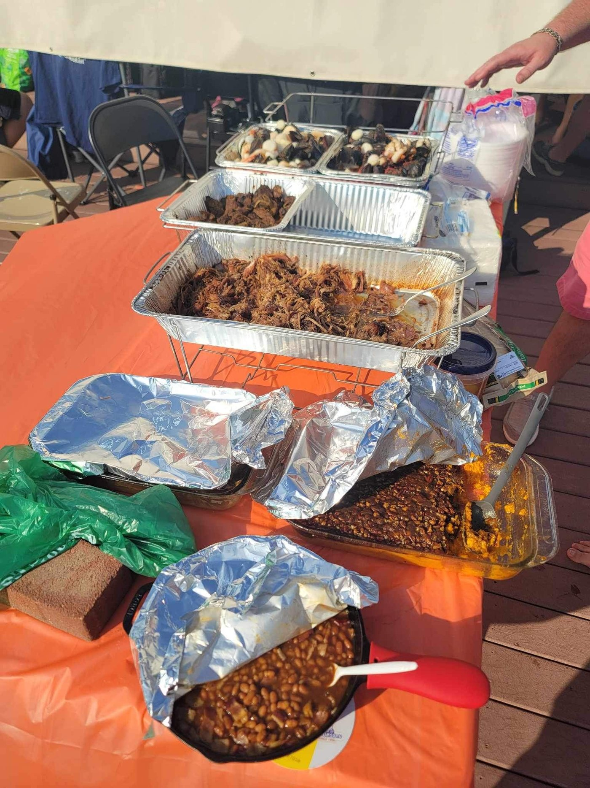
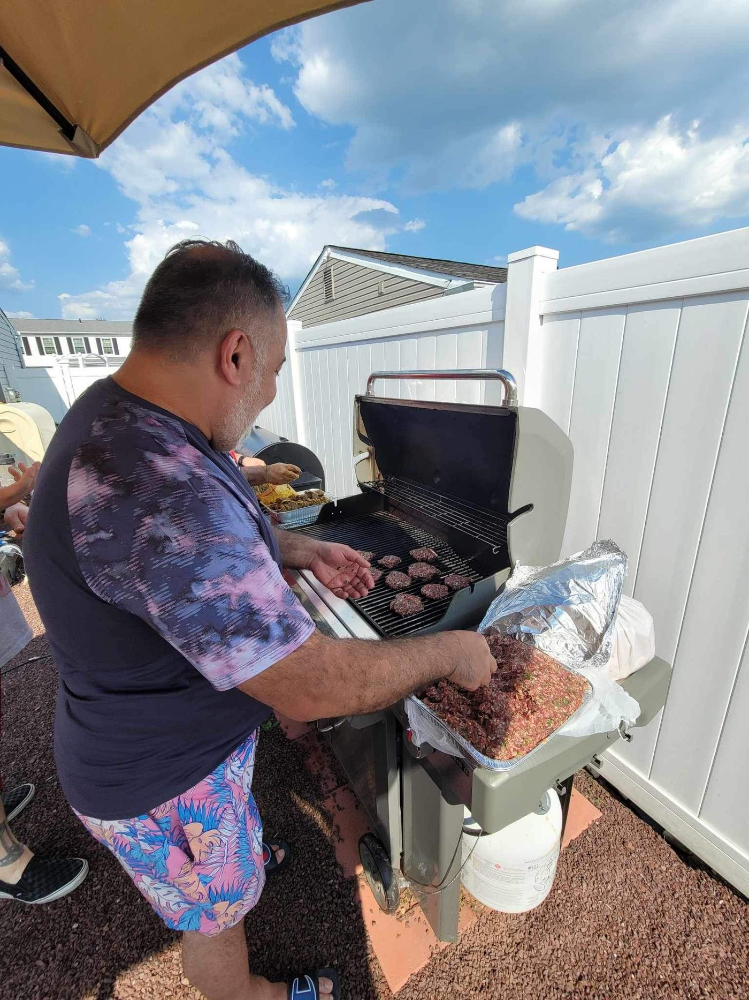
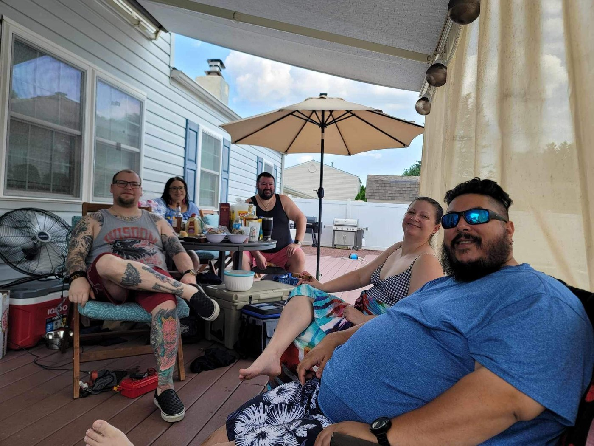
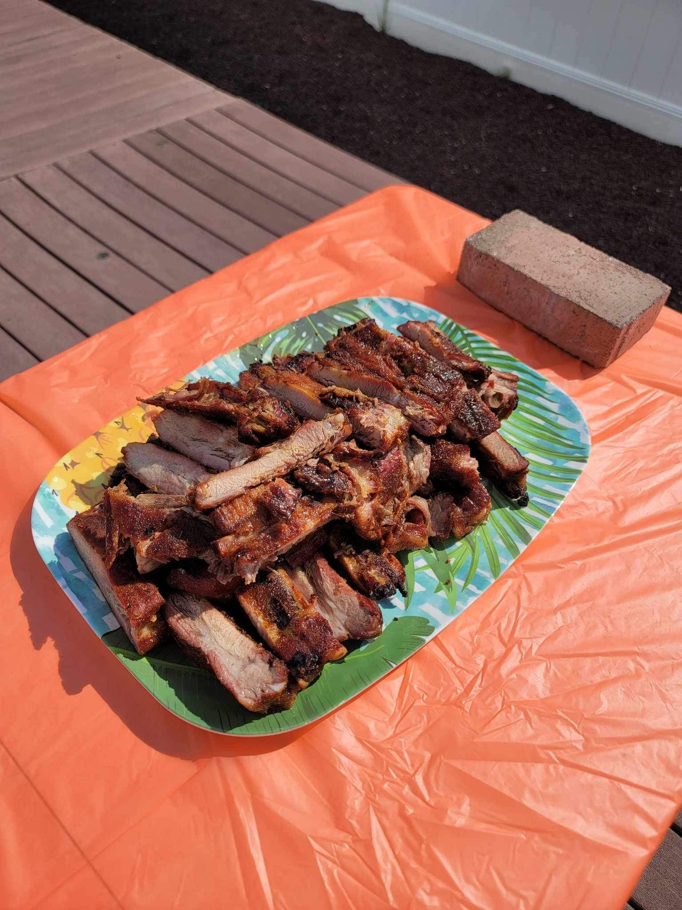
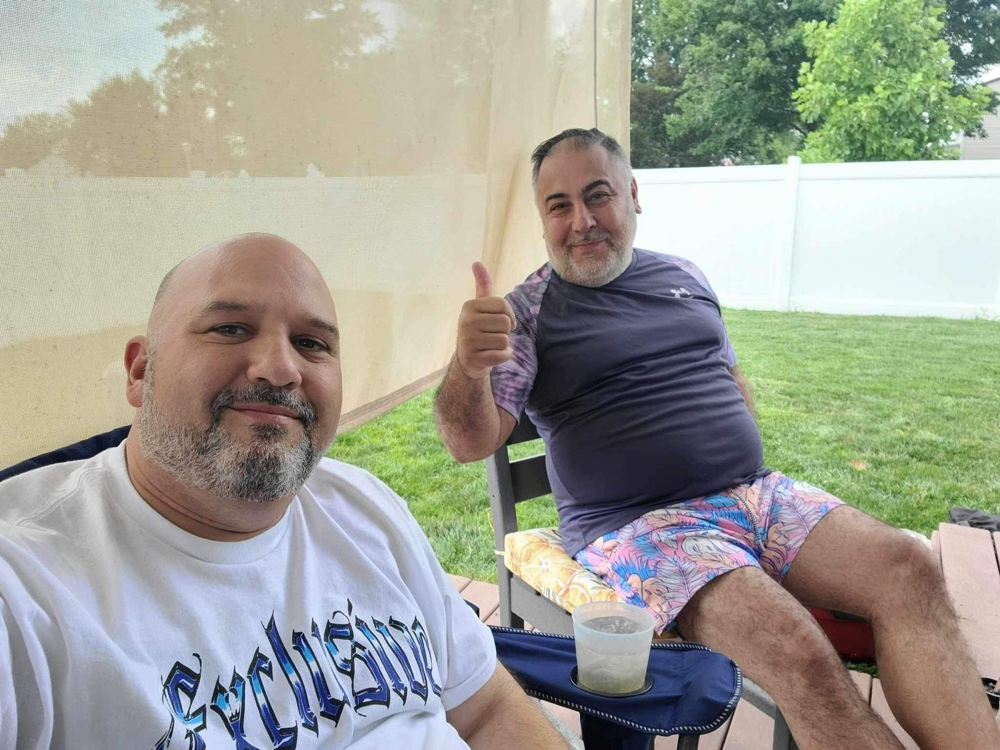
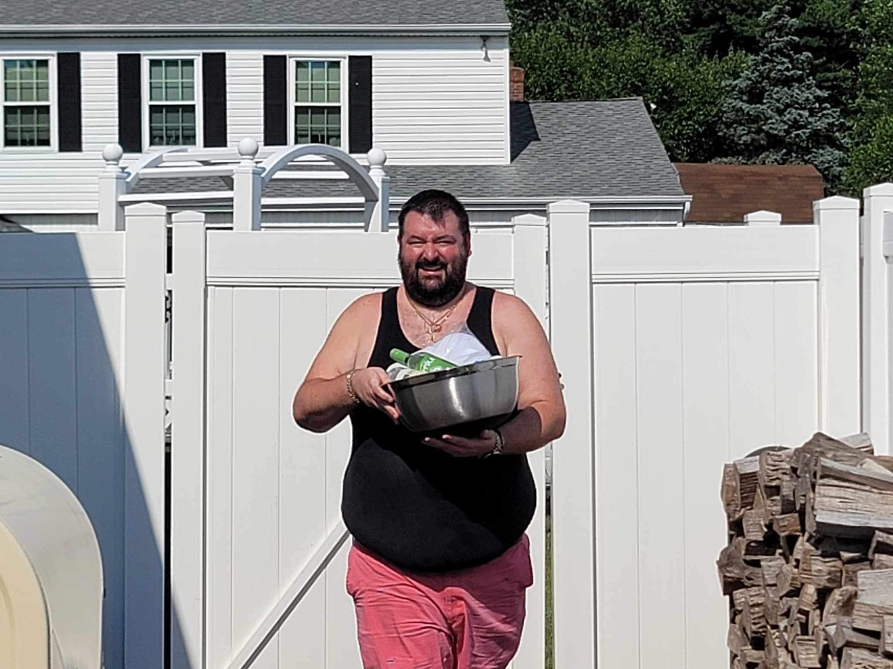
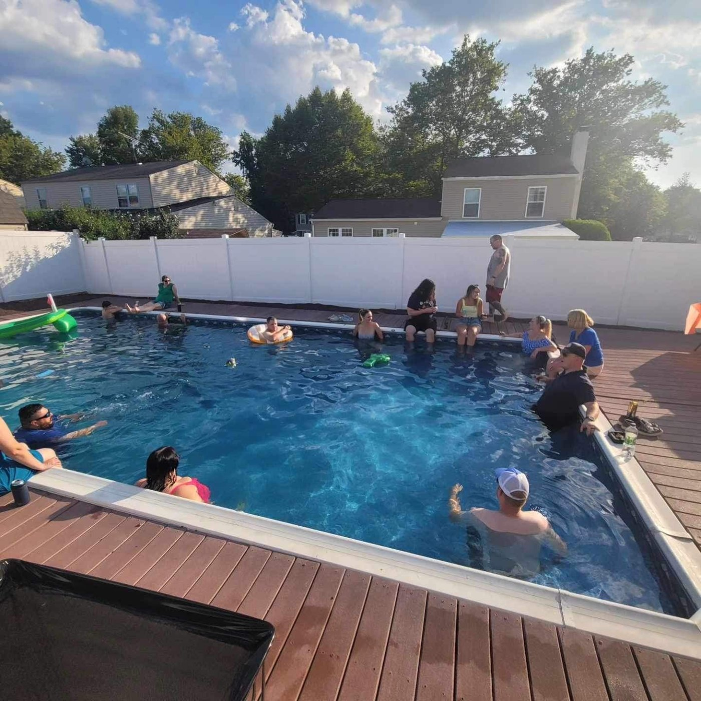
Artifact
The First Shirt
The first official BRO-B-Q logo and merch made their debut in Edition II.
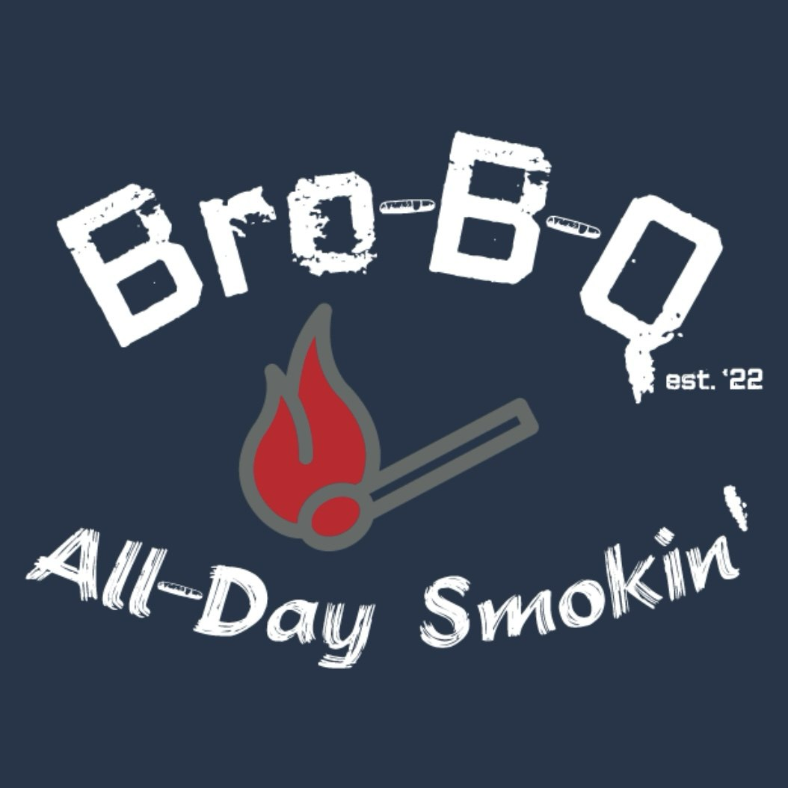
New Faces
Danny • Kamel • Matt • Schoey • Mike
Lore
The jalapeños got left behind.
The chickens arrived after dark.
The first one proved it was possible.
The second proved it was worth repeating.